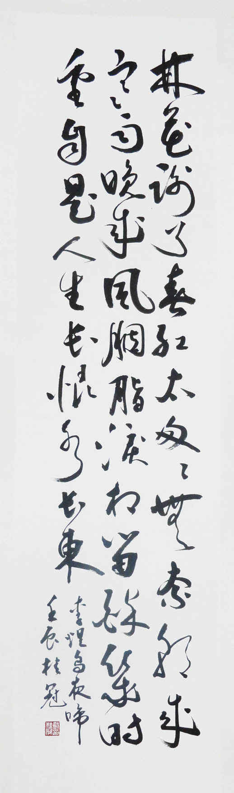

|  |
《相见欢·林花谢了春红》
林花谢了春红，太匆匆。
注释南唐后主的这种词，都是短幅的小令，况且明白如话，不待讲析，自然易晓。他所“依靠”的，不是粉饰装做，扭捏以为态，雕琢以为工，这些在他都无意为之；所凭的只是一片强烈直爽的情性。其笔亦天然流丽，如不用力，只是随手抒写。这些自属有目共见。但如以为他这“随手”就是任意“胡来”，文学创作都是以此为“擅场”，那自然也是一个笑话。即如首句，先出“林花”，全不晓毕竟是何林何花，继而说是“谢了春红”，乃知是春林之红花，——而此春林红花事，已经凋谢。可见这所谓“随手”“直写”，正不啻书家之“一波三过折”，全任“天然”，“不加修饰”，意欲成“文”，诚梦呓之言也。 且说以春红二字代花，即是修饰，即是艺术，天巧人工，总须“两赋而不来”方可。此春红者，无待更言，乃是极美好可爱之名花无疑，可惜竟已凋谢。调零倘是时序推迁，自然衰谢，虽是可惜，毕竟理所当然，尚可开解；如今却是朝雨暮风，不断摧残之所致。名花之凋零，如美人之夭逝，其为可怜可痛，不止倍蓰。以此可知，“太匆匆”一句，叹息中着一“太”字；“风雨”一然，愤慨中着一“无奈”字，皆非普通字眼，质具千钧，情同一恸矣。若明此义，则上片三句，亦千回百转之情怀，又匪特一笔三过折也。讲说文学之事，切宜细思寻玩，方不致误认古人皆荒率浅薄之妄人，方能于人于己两有所益。 过片三字句三叠句，前二句换暗韵仄韵，后一句归原韵，别有风致。但“胭脂泪”三字，异样哀艳，尤宜着眼。于是让人们想到杜甫的名句“林花着雨胭脂湿”（《曲江对雨》），此乃南唐后主也熟读杜诗之证也。后主分明从杜少陵的“林花”而来，而且因朝来寒“雨”竟使“胭脂”尽“湿”，其思路十分清楚，但是假若后主在过片竟也写下“胭脂湿”三个大字，便成了老大一个笨伯，鹦鹉学舌，难有意味。他毕竟是艺苑才人，他将杜句加以消化，提炼，只运化了三字而换了一个“泪”字来代“湿”，于是便青出于蓝，而大胜于蓝，便觉全幅因此一字而生色无限。 “流水”两句，叹息春归何处。张泌《浣溪沙》有“天上人间何处去，旧欢新梦觉来时”之句，“天上人间”，是说相隔遥远，不知其处。这是指春，也兼指人。词人长叹水流花落，春去人逝，故国一去难返，无由相见。 末句略如上片歇拍长句，也是运用叠字衔联法：“朝来”“晚来”，“长恨”，“长东”，前后呼应更增其异曲而同工之妙，即加倍具有强烈的感染力量。顾随先生论后主，以为“问君能有几多愁，恰似一江春水向东流”，其美中不足在“恰似”，盖明喻不如暗喻，一语道破“如”“似”，意味便浅。按这种说法，则“自是人生长恨水长东”，恰好免去此一微疵，使尽泯“比喻”之迹，而笔致转高一层矣。学文者于此，宜自寻味，美意不留，芳华难驻，此恨无穷，而无情东逝之水，不舍昼夜，“淘尽”之悲，苏轼亦云，只是表现之风格手法不同，非真有异也。 |